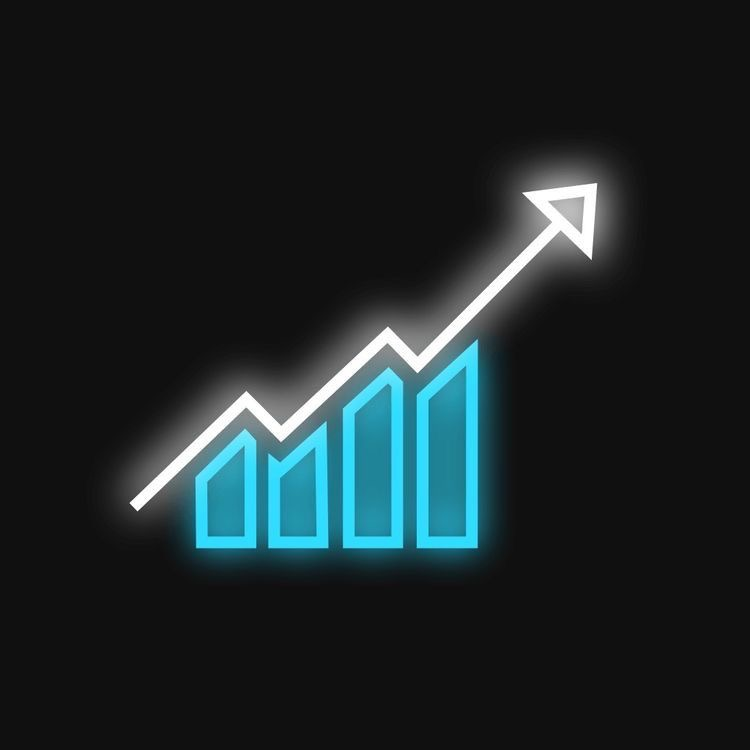

Market Analysis
Structured technical market views with focus on price action and key levels.
Learn more →
AFGFXAFGFX is a trading brand focused on market analysis, education and a disciplined approach to financial markets.
AFGFX is built around a simple idea: trading is not about chasing every move. It is about preparation, analysis, risk management and consistency.
Structured technical market views with focus on price action and key levels.
Learn more →Educational content covering process, risk and market structure.
Learn more →Important market events, themes and observations in a focused format.
Learn more →A space for people interested in markets, discipline and continuous learning.
Connect →Selected milestones — not a promise of future performance.
“Silence outside.
Discipline inside.”
AFGFX values patience over noise, preparation over prediction and process over emotion.
Follow AFGFX for market content, educational posts and updates.